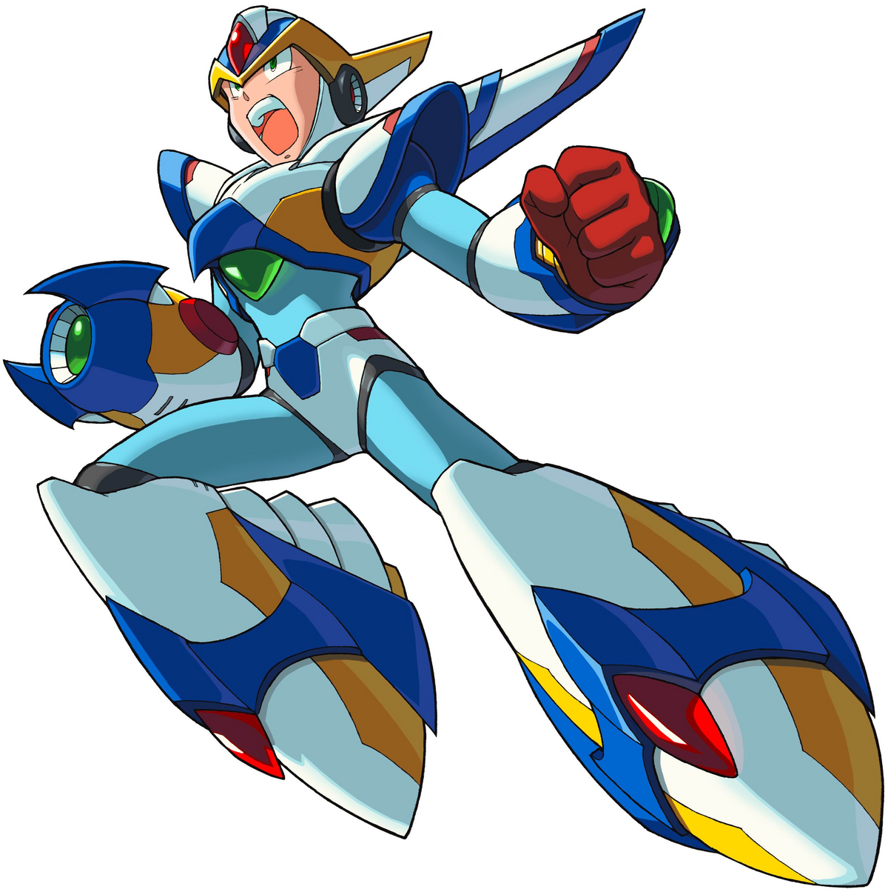

ARQUIVO DE OPERAÇÃO // MEGA MAN X6

O fenômeno Nightmare.
X retorna à Terra devastada para investigar Gate, os Nightmare Investigators e o legado do Zero Virus.
Iniciar investigação ↓
PROTOCOLO NIGHTMARE
Detonado Mega Man X6
A campanha começa exclusivamente com X. Esta rota prioriza mobilidade, resgates e aquisição das Blade Armor Parts.

HUNTER ATIVO // XFalcon Armor
X inicia a operação com uma versão reparada da Falcon Armor. Use o air dash, o X-Buster e a Z-Saber para alcançar os primeiros Reploids antes que os Nightmares os infectem.
Sistema Nightmare: fases concluídas alteram perigos e elementos de outras áreas. Resgate os 16 Reploids de cada setor antes de repetir rotas.
06Rota recomendada: Commander Yammark → Ground Scaravich → Blaze Heatnix → Blizzard Wolfang → Rainy Turtloid → Metal Shark Player → Shield Sheldon → Infinity Mijinion.
Avance pela selva vertical, proteja os Reploids e use os insetos mecânicos como referência de rota.
Energy Heart Explore o caminho superior.
Blade Leg Parts Alcance a cápsula com precisão aérea.
Commander Yammark
Fraqueza: Ray ArrowYammar Option
ESTRATÉGIA: Destrua as libélulas orbitais e ataque durante a troca de formação.
Os totens transportam X por salas aleatórias. Vasculhe cada variação antes de sair.
Energy Heart Surge em uma das salas aleatórias.
Blade Head Parts Procure atrás dos blocos do museu.
Ground Scaravich
Fraqueza: Yammar OptionGround Dash
ESTRATÉGIA: Mantenha distância da pedra crescente e use as opções para interromper a investida.
Derrote os Nightmare Snakes e administre as plataformas sobre a lava.
Energy Heart Após uma das câmaras de serpentes.
Secret Boss A rota alternativa leva ao portal Nightmare.
Blaze Heatnix
Fraqueza: Ground DashMagma Blade
ESTRATÉGIA: Use Ground Dash quando ele pousar e evite permanecer sob o voo em chamas.
Controle a descida das avalanches e use o gelo para alcançar os setores superiores.
Energy Heart Atrás de uma parede na área de gelo.
Shadow Leg Parts Exige acesso ao setor oculto.
Blizzard Wolfang
Fraqueza: Magma BladeIce Burst
ESTRATÉGIA: Quebre o ritmo dos saltos com Magma Blade e atravesse os pilares de gelo.
Desative os geradores de chuva ácida antes de explorar o templo.
Energy Heart Além de uma barreira de chuva.
Shadow Body Parts Na rota protegida por espinhos.
Rainy Turtloid
Fraqueza: Ice BurstMeteor Rain
ESTRATÉGIA: Destrua os dois cristais das costas e use Ice Burst nas aberturas.
Avance entre compactadores e sucata reanimada sem abandonar os Reploids presos.
Energy Heart Sob uma prensa do laboratório.
Shadow Arm Parts Na passagem alternativa do compactador.
Metal Shark Player
Fraqueza: Meteor RainMetal Anchor
ESTRATÉGIA: Use a chuva para cancelar as invocações e não permaneça sob a prensa.
Redirecione os lasers com os espelhos e abra os corredores ocultos.
Energy Heart Use o espelho para romper a barreira.
Blade Body Parts Dentro da rota dos lasers.
Shield Sheldon
Fraqueza: Metal AnchorGuard Shell
ESTRATÉGIA: Faça o projétil ricochetear nos escudos e ataque quando a defesa se abrir.
Destrua os cabos do Giant Reploid enquanto os clones pressionam a arena.
Energy Heart Junto ao acesso do portal secreto.
Blade Arm Parts Próximo à cápsula após o segundo cabo.
Infinity Mijinion
Fraqueza: Guard ShellRay Arrow
ESTRATÉGIA: Mantenha o Guard Shell ativo, destrua clones rapidamente e concentre disparos no original.
ARQUIVO FINAL
Laboratório Secreto de Gate
Zero Nightmare
Encontre um portal secreto antes de derrotar os oito Investigators para recuperar Zero.
High Max
Carregue o X-Buster, atordoe-o e então use uma arma especial para causar dano.
Dynamo
Use Meteor Rain para fazê-lo liberar Nightmare Souls e acelerar o Hunter Rank.
Gate
Rebata as esferas de energia contra ele e preserve espaço nas plataformas instáveis.
Sigma
Derrote as duas formas usando ataques carregados e Magma Blade nos alvos menores.
Segredos
Blade Armor, Shadow Armor, Ultimate Armor e Black Zero alteram mobilidade e finais.